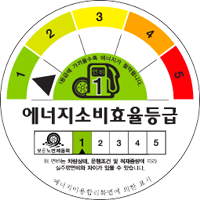
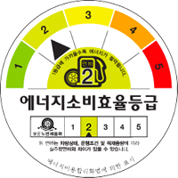
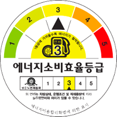
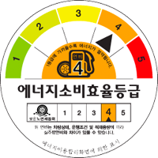
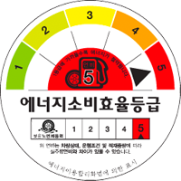

효율등급제
타이어의 공기압은 안전과 직결된 사항으로 주기적인 체크가 필요하며, 적절한 공기압 관리는 타이어의 수명까지 연장시킵니다.
타이어효율등급제란?
타이어 효율등급제란, 타이어의 회전저항(마찰력, Rolling Resistance)과 젖은 노면 제동력(Wet Grip)을 측정, 이를 1~5등급으로 등급화하여 표시하는 제도입니다. 등급표시 항목 중 연비항목은 타이어의 회전저항을 나타냅니다. 회전저항이 적을수록 타이어와 노면의 마찰 저항이 줄어들어 그만큼 연비 효율을 높이고 이산화탄소 배출도 줄일 수 있게 환경보호에도 일조하게 됩니다. 젖은 노면 제동력은 회전저항을 줄이면서도 제동성을 유지하여 안정한 주행을 위한 평가 항목입니다. 회전저항을 줄이면 연비 효율을 높일 수 있지만 젖은 노면에서의 접지력이 약해질 수 있기 때문입니다.
연비효율표시
-  1등급
-  2등급
-  3등급
-  4등급
-  5등급
연비효율은 회전저항(RR, Rolling Resistance)을 기준으로 측정합니다. 회전저항은 볼이나 타이어와 같은 둥근 물체가 평면에서 일정한 속도의 직선으로 운동하는 동안 발생하는 저항을 의미합니다. 이 저항은 주로 물체의 변형, 표면의 변형 또는 두 가지 모두의 변형에 의해 발생합니다. 다른 요인으로는 휠 반경, 전진 속도, 표면 접착력 및 접촉 표면 사이의 상대적 미세 미끄러짐이 포함됩니다. 이 저항은 주로 휠이나 타이어의 재질 및 지면 종류에 따라 결정됩니다.
젖은노면 제동력 표시
- 1
- 2
- 3
- 4
- 5
젖은 노면 제동력(Wet Grip)은 브레이킹 성능을 의미하여, 안전성에 관련된 타이어 성능입니다. 회전저항이 낮은 타이어는 연비효율성에서는 유리하나 도로가 젖어 있을 때 도로와의 밀착성이 약할 수 있습니다. 따라서 타이어 에너지소비효율 등급제에서는 Label에 젖은 노면 제동력을 연비효율과 함께 기재하도록 규제하고 있습니다.